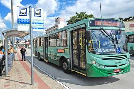
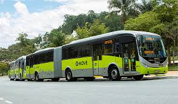

Tranporte Público em Belo Horizonte
Transporte
19/01/2026
O transporte público em Belo Horizonte é focado em uma vasta rede
de ônibus.
Ana Maria Silva

Tranporte Público em Belo Horizonte
Transporte
23/02/2026
O sistema de transporte em Belo Horizonte conta com diversas
linhas de ônibus que atendem grande parte da população.
Carlos Henrique Souza
Tranporte Público em Belo Horizonte
Transporte
12/03/2026
A mobilidade urbana em Belo Horizonte é sustentada
principalmente por uma ampla rede de ônibus que circula pela cidade.
Mariana Oliveira Costa